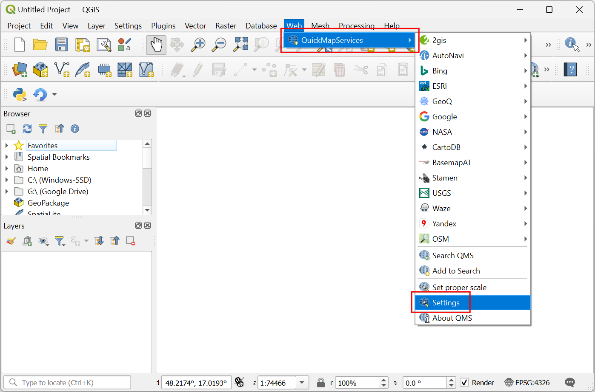
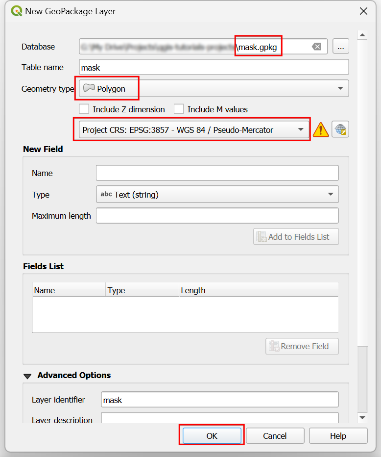

Ujaval Gandhi
Ujaval GandhiMaking Interactive Reveal Maps (QGIS3)¶
This tutorial shows how to use a dynamic mask layer in a layer group along with expressions to make an interactive map that reveal the layers beneath the current layer as you move your cursor around. This is done using the new mask blending modes in QGIS along with technique for adding interactivity shown in the previous tutorial on Making Interactive Canvas Maps (QGIS3).
This tutorial is inspired from Hamish Campbell who shared his interactive visualization on LinkedIn.
Overview of the task¶
We will load 2 raster tile layers and use a mask layer with geometry generator symbology to reveal the below layer as the cursor moves around on the canvas.

Procedure¶
We will start by loading 2 raster layers. One layer at the top and another one at the bottom that will be revealed by the mask layer. We will get these from the QuickMapServices plugin. Search and install the QuickMapServices plugin from the QGIS Official Plugin Repository. See Using Plugins (QGIS3) for instructions on installing plugins. Once installed, we will need to add some additional service to this plugin. Go to .

In the QuickMapServices Settings dialog, switch to the More Services tab and click the Get contributed pack button. This step is required to get access to the Google Satellite basemap.

Now we are ready to add the layers. The top layer in our map will be the OpenStreetMap layer. Go to to add it. Zoom and center the map to any location of your choice.

Next add the Google Satellite layer from . This will be the bottom layer that will be revealed using the mask.

We will create a new layer that will act as the mask. Go to .

In the New GeoPackage Layer dialog, click the … button for Database and browse to a directory on your computer. Save the layer as
mask.gpkg. Change the Geometry type toPolygonand the CRS to beProject CRS: EPSG:3857 - WGS84 / Pseudo-Mercator. Having this layer in a Projected CRS is helpful as it allows us to specify the radius of the mask in meters as opposed to degrees. Click OK.

A new layer
maskwill be added to the Layers panel. Click the Open the Layer Styling Panel button. Click on Single Symbol to see additional options for renderers.

Select
Inverted Polygonsas the renderer. Scroll down and click on the Simple Fill to see additional symbol layer types.

Примечание
The inverted polygon renderer is used to show regions outside the feature. In our case, the mask layer is empty so the inverted region is the whole canvas. That is why you see the whole canvas rendered using the chosen symbology. We use this renderer for the tutorial since it can render the map without needing any features being present in the layer and will work anywhere in the world.
Select
Geometry Generatoras the Symbol layer type. We will now enter an expression to change how the layer is rendered. Click the Expression button.

Enter the following expression in the Expression Builder dialog. This expression will create a buffer polygon with a radius of 5000 meters around the current position of the cursor. Click OK.
buffer(@canvas_cursor_point, 5000)
You will see a circular polygon rendered wherever you click on the canvas. Adjust the size of the buffer if required for your region and close the Layer Styling Panel. To use the mask blending modes, we must create a layer group. Hold the Ctrl key and select the
maskand theOSM Standardlayers. Right-click on the selected layers and choose Group Selected.

A new layer group will be created. Enter the name as
mask_group. Click the Open the Layer Styling Panel button.

Check the Render Layers as a Group button. This step enables the mask blending modes for the layers in this group.

Select the
masklayer frommask_group. In the Layer Styling panel, scroll down and expand the Layer Rendering section.

Click the dropdown selector for the Layer Blending Mode. Select the
Inverse Mask Belowblending mode. The layer below the layer group will now be revealed in the portion covered by the buffer polygon.

The map canvas doesn’t yet respond to the cursor movement because it doesn’t refresh unless you move the map. Let’s make it auto-refresh. Right-click the
masklayer and select Properties.

Switch to the Rendering tab. Scroll down and check the Refresh layer at interval. Set the interval to a small number such as
0.1(i.e. 100ms) and click OK.

Now as you move your cursor, the region below your cursor position will be interactively revealed.
If you want to give feedback or share your experience with this tutorial, please comment below. (requires GitHub account)